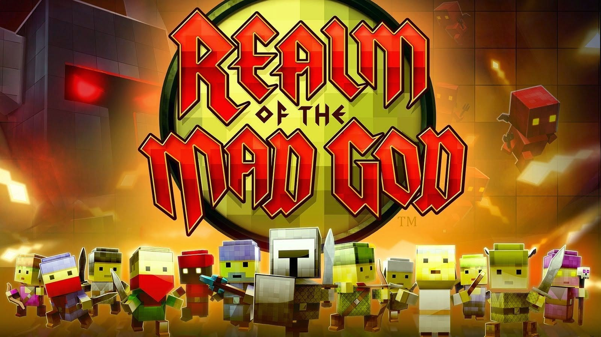

Realm of the Mad God (PC)
Played by Jaymian Bustos
Description:
I never thought of challenging myself in video games until I started playing Realm of the Mad God (ROTMG). This was a rogue-like, bullet hell, MMO RPG where the gimmick was that if the character you played as dies, that character will be deleted with everything you have equiped and stored in their inventory. With hundreds of different enemies, attack patterns, and dungeons to explore, there was a learning process akin to Sisyphus where you would die, learn, adapt, repeat and once you reach that top of the hill, there would be something new or unfamiliar that would push you back down and make you climb again. It was a game of patience and persistence, this game has ultimately taught me to know my limits and when to push those limits and how to make mistakes and learn from them. This game has also been a huge inspiration for learning pixel art and how so much can be conveyed with so little pixels and how a good game doesn't need high detailed visuals to be good in the first place. It is a game I will never forget and has taught me valuable lessons I take on for any of my future endeavors.
Terraria (PC)

Played by: Jaymian Bustos
Description:
Middle school was definitely the Minecraft phase for me and many others my age. But it was not a game that I could run very efficiently with my home computer nor my laptop at the time, so one day my cousin had reccomended me Terraria. I scoffed at the game thinking "This is just 2D minecraft, who would wanna play this?" Little did I know this would create some of my greatest friendships in my freshmen year of high school and become so much more. Getting on every day after school, planning our battle each boss, pulling all nighters building and grinding for better gear. Never before was I enjoying a game so much with so much content, I stood back and asked myself "Why would anyone want to play Minecraft when Terraria exists?"
Call of Duty: Black Ops 2 (Xbox 360)

Played by: Jaymian Bustos
Description:
Call of Duty BO2 holds a special place in my heart for being my first FPS game and the first game I played online with my friends in elementary school. I was pretty late to play Call of Duty compared to my friends who started years prior in previous iterations of the game, so there was a long period where I felt left out. But, when I first got my hands on an Xbox 360 you bet this was one of the first games I asked for, and I finally experienced what I was missing out on. Of course multiplayer is fun, but the zombies game mode was the memory maker. Gunning down waves of zombies, figuring out the easter eggs to learn more about the lore was enough for my friends and I to get together and gun down thousands of zombies for hours just to unlock a special cutscene. Knowing where the franchise is today, I feel fortunate I was able to play in an era where the story was at its peak.